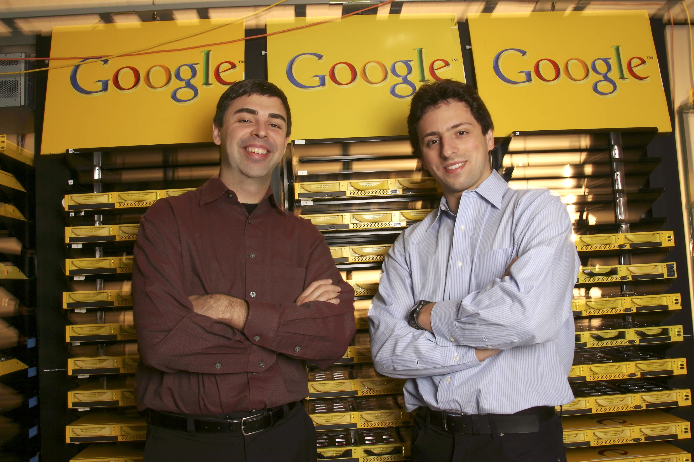
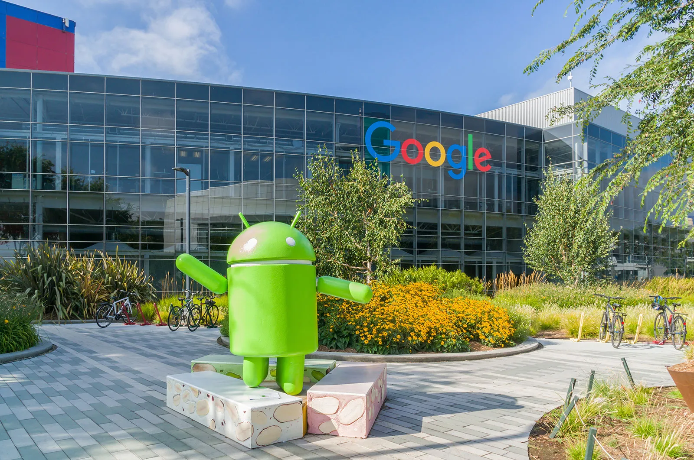
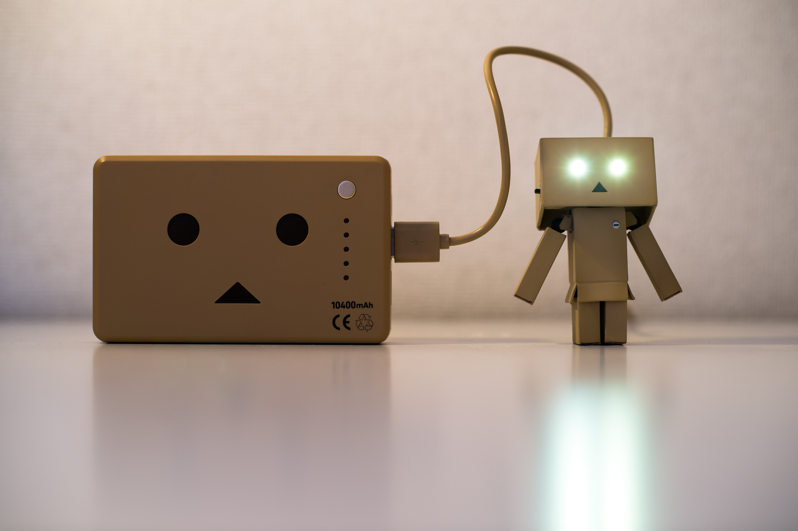

EFFECTEFFECT
EFFECTEFFECTcreated by Amina Nuhu
Upon the birth of the internet, information was quite sparse and generally accessible via different libraries and specialised databases and archives. Technical experience, expertise and specialist knowledge would often be demanded, as well as efficient, when it came to retrieving specific information, as the internet remained constrained at this time.
The World Wide Web, created by Tim Berners-Lee saw immense proliferation in the 1990s. To aid the navigation of this complex, accumulating information system, search engines such as Yahoo, AltaVista and Lycos emerged. These popular early search engines held the capabilities of indexing web pages based on keyword prompts and other rudimentary algorithms, thus creating a digital encyclopaedia.
In 1998, came along Google. Google was founded by American computer scientists Larry Page and Sergey Brin while they studied for their PhDs at Stanford University in California. Google brought about a swift revolution and alteration in online searching.
 Google’s PageRank Algorithm
Google's PageRank algorithm is a method used by Google Search to rank web pages in their search engine results. It works by analysing the links between pages to determine their relevance and importance. Overall, PageRank aims to prioritise web pages based on their importance and relevance, as indicated by the links they receive from other pages. However, it's just one of many factors that Google's search algorithm considers when ranking pages
click here for a deeper dive into Google's PageRank AlgorithmBut what does this have to do with the google effect?
Relevance and Authority - PageRank evaluates the relevance and authority of web pages based on the links they receive from other pages. Pages with higher PageRank scores are considered more relevant and authoritative. When users search for information, Google's algorithm presents them with pages that it deems most relevant and credible based on PageRank. Information Retrieval of PageRank, users often find the most relevant and trustworthy information at the top of Google search results. This leads to a reliance on Google as a source of information, as users trust that the top-ranked results are likely to fulfil their informational needs. Cognitive Offloading - The availability of vast amounts of information at our fingertips through Google reduces the need to retain information in our memory. Instead of remembering specific facts or details, people are more inclined to rely on Google to retrieve information when needed. This reliance on external sources for information retrieval is a key aspect of the Google effect. Selective Attention - Users tend to focus on the top few search results displayed by Google, often ignoring lower-ranked results. This selective attention reinforces the authority of top-ranked pages and further contributes to the Google effect by shaping users' perceptions and understanding of topics based on the information presented at the top of search results.
Transactive Memory
Computers have become a part of our transactive memory. Transactive memories are useful in social groups where individuals of a certain expertise possess information that another member of the same group might lack. In short, we rely on external sources to remember information. This individual, however, due to his own expertise in a different subject, might possess information the former individuals might lack. Studies have consistently shown that information learned through the Internet is recalled with less accuracy and confidence, as compared to learning through a hardcover book.
Digital Amnesia
Google is responsible for a reliance on easily accessible information, which subsequently causes a lack of memory retention, along with an inclination to quickly forget information. This has had a huge impact on the internet for a plethora of reasons and is known as “the google effect”.
Search Efficiency
The efficiency of Google search due to quick and easy accessibility means there is less incentive for people to memorise information. Rather than retaining information, people are focusing on development of skills to easily find and assess information online. This stark shift had a great effect on human cognition, in relation to how people approach the acquisition of knowledge.
Education and Learning
Educational approaches have evolved to emphasise critical thinking, problem-solving, and information literacy, rather than rote memorization. Students are taught how to navigate the internet and assess the credibility of sources.
Information Overload, Overconsumption and Misinformation
The reliance on search engines has led to information overload, with vast amounts of content available online. This abundance of information also raises concerns about misinformation and the need for effective fact-checking.
Privacy, Data Security and Algorithms
As people rely on the internet for information, issues of privacy and data security become more critical. Personal information can be used to tailor search results.